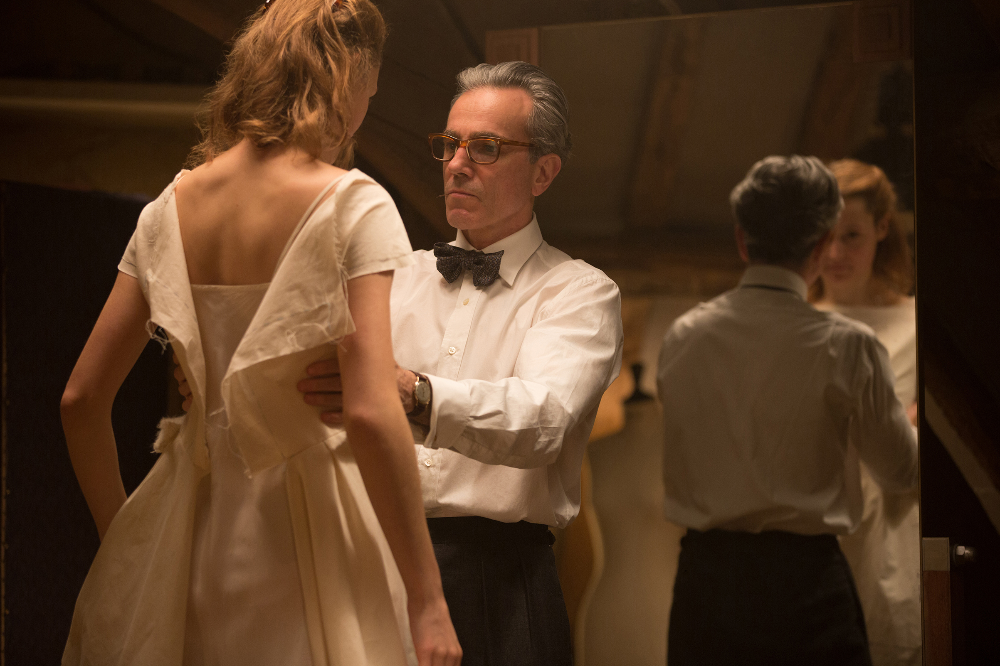

Coming from the legendary pairing of director Paul Thomas Anderson and actor Daniel Day-Lewis, the film is about fashion genius Reynolds Woodcock as he finds a new muse in Alma. The film follows the two of them in what can only be described as a twisted love story. Woodcock’s sister Cyril stands out as a great part of the film. The film was also nominated for Best Director, Best Actor, Best Supporting Actress, Best Original Score, and Best Costume Design. 
Back